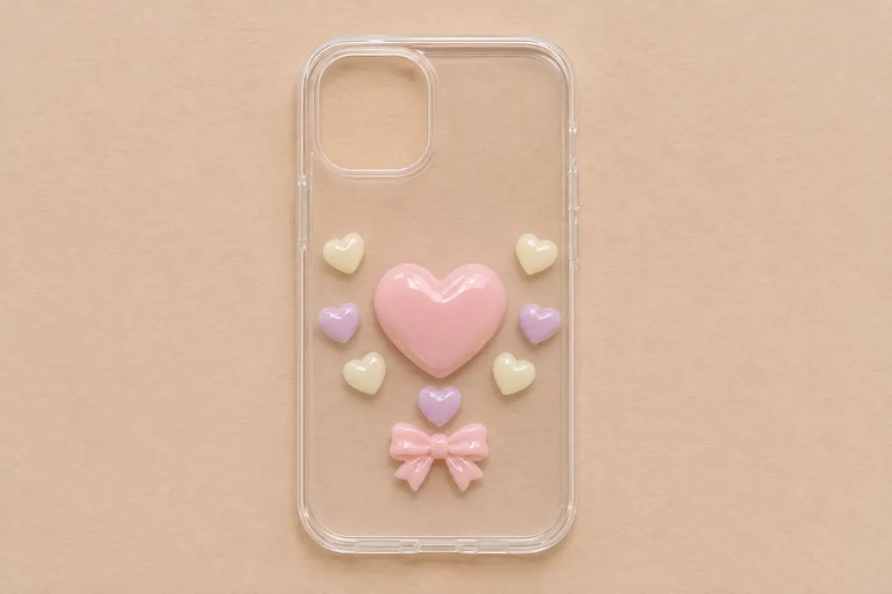
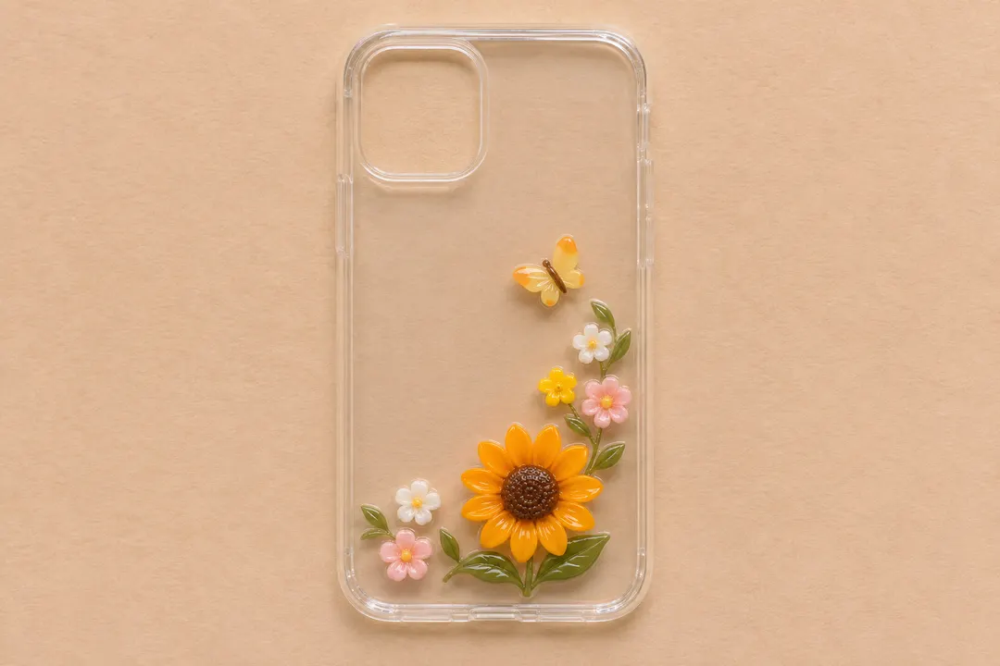
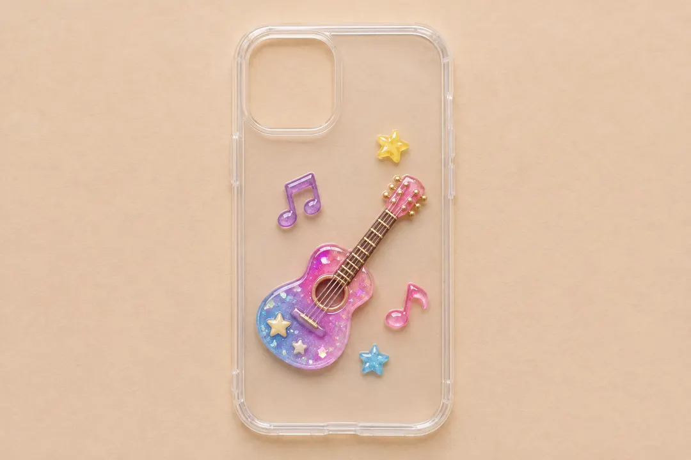

How to Decorate a Phone Case with Resin Charms and Polymer Clay
Watch how to decorate a clear case with ready-made ocean charms, tiny polymer clay accents and a pastel heart strap.
Find the pieces in the video
- RW003223 · Marine resin flatbacks for the large ocean shapes.
- YX720 · Pastel shell polymer clay slices and SLM10093 · Mix with clay stars for the smaller details. Ask which shapes and colors are included in the sample.
- YA425 · Heart acrylic beads for an optional strap. Check cord fit and use the case’s built-in lanyard holes.
The miniature clay starfish are styling examples. Ask about a matching sample. The case, adhesive and cord are separate supplies.
Ask about the featured components
Read the ocean case video steps
- Take the phone out and wipe the outside of the empty case clean and dry.
- Dry-fit the larger resin charms, then position the smaller clay pieces in the gaps.
- Apply a small dot of compatible adhesive to each flat back. Place each piece gently, keeping the camera and rim clear.
- Leave the case flat and wait for the full cure time on the adhesive label.
- For the optional strap, thread its cord loop through the lanyard holes. Feed the strand through the loop and gently tighten it.
Start with one main charm and a few smaller pieces. A clear case makes it easy to see the gaps, and you can move everything around before you open the glue. Try one of the three illustrated layouts below.
What you’ll need
- An empty phone case with a flat back panel and a known material
- One focal charm and a few smaller flatback accents
- Adhesive that lists both the case material and the charm material or finish as compatible
- A soft cloth, scrap paper, a pencil and optional tweezers for small pieces
Listings sometimes use “resin clay charm” as a search phrase. Check each piece’s actual material, back shape and thickness before choosing your glue. The Qula Craft Resin Charms collection includes resin flatbacks and other shapes. For case fit and packing questions, see our decoden supplies buying guide.
Decorate the case in five steps
1. Remove the phone and clean the case
Take the phone out and set it aside. Clean the outside back according to the case maker’s instructions, then let it dry. Check the backs of the charms for dust and confirm that each piece rests flat.
2. Test the layout before applying glue
Trace the case on paper and mark the camera and flash opening. Position the largest piece first, then add smaller ones. Move the loose arrangement onto the empty case to check how the charms sit on the actual surface. Leave the camera, flash, buttons, ports and flexible rim clear. Look from the side for pieces that overhang or rock.
3. Check the adhesive on a spare piece
Read the adhesive label for compatible materials, ventilation and handling. If you can, test a spare charm on a spare case or matching scrap. Let the test cure as directed and look for clouding, lifting or a weak bond before gluing the whole layout.
4. Attach the charms
Keep your paper layout beside the case. Apply the adhesive as directed and place the focal charm first. Add accents one at a time, checking that each sits flat and that glue stays away from openings and the rim.
5. Let the case cure before using it
Keep the empty case flat and undisturbed for the full cure time on the adhesive label. Check for loose pieces before reinstalling your phone. If you use a wireless charger, test your setup after curing. Raised pieces can keep the case from sitting flat on the charger. Remove the case if charging is unreliable.
Three phone case decoration ideas
These illustrations show example layouts. Compare the actual size, back and thickness of the pieces you choose against your own case.
Pastel heart cluster

Try pink, lavender and cream. Keep a little clear space between the pieces so the main heart stands out. For a size reference, compare the RW25607 LOVE ME resin heart cabochon, listed at 20 × 20 mm. Check its height and fit before gluing.
Mini garden

Keep leaves and petals inside the back panel. For a size reference, see the 24 mm RW927 resin sunflower. Ask for a back photo and thickness if you plan to test it on a case.
Colorful guitar

Trace the guitar’s full outline before choosing the accents. If its neck reaches the rim or camera opening, rotate the piece or choose a smaller design.